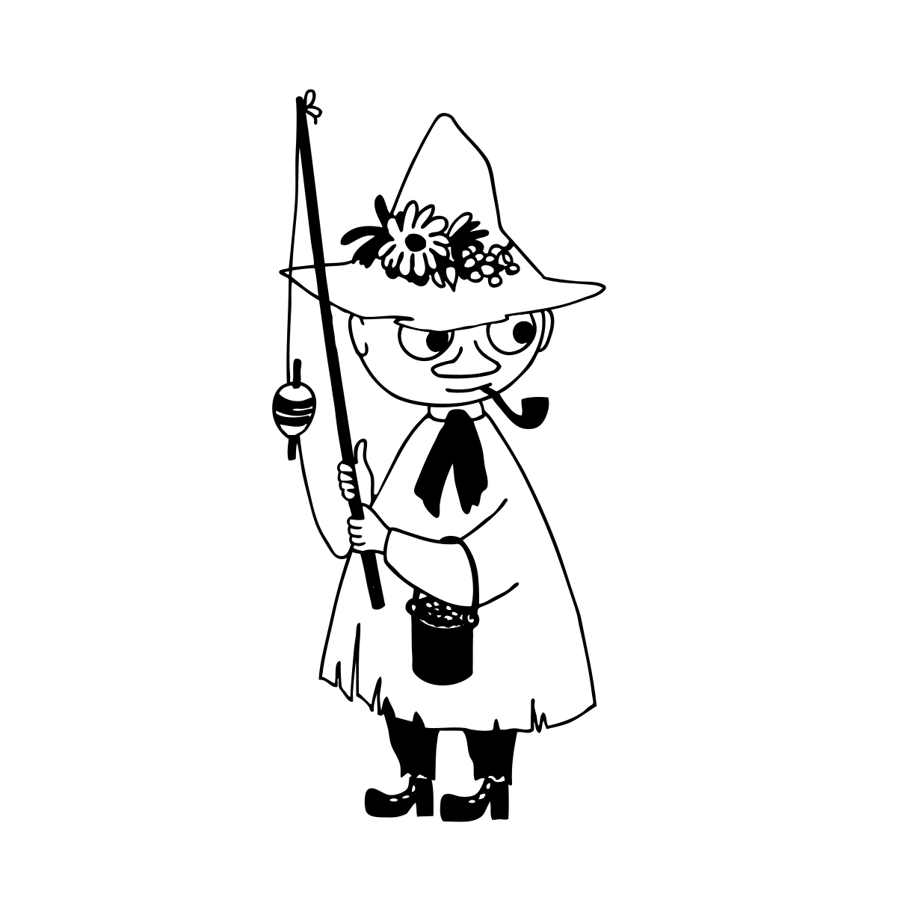
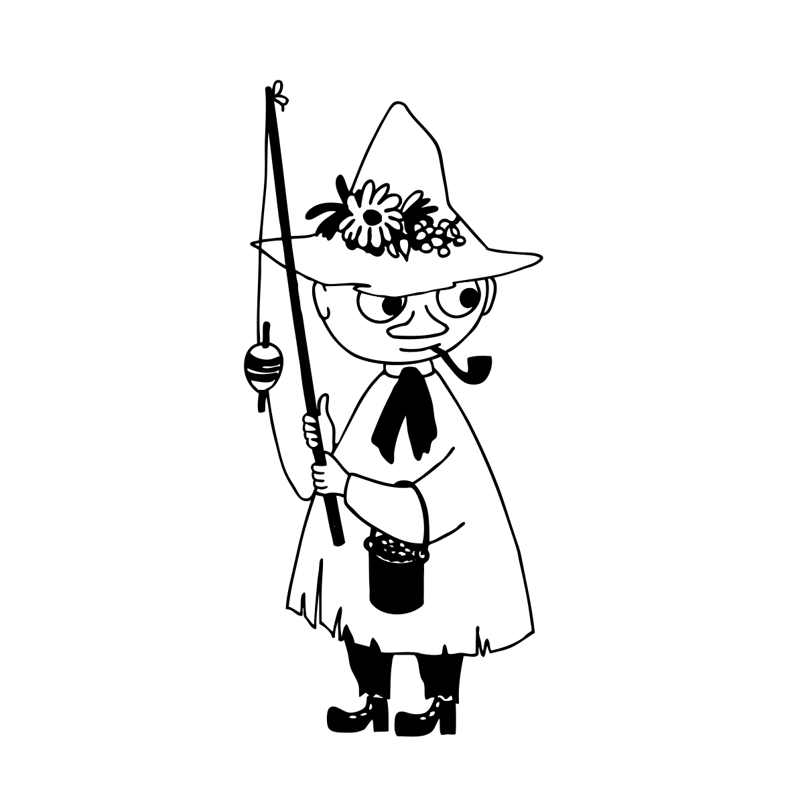
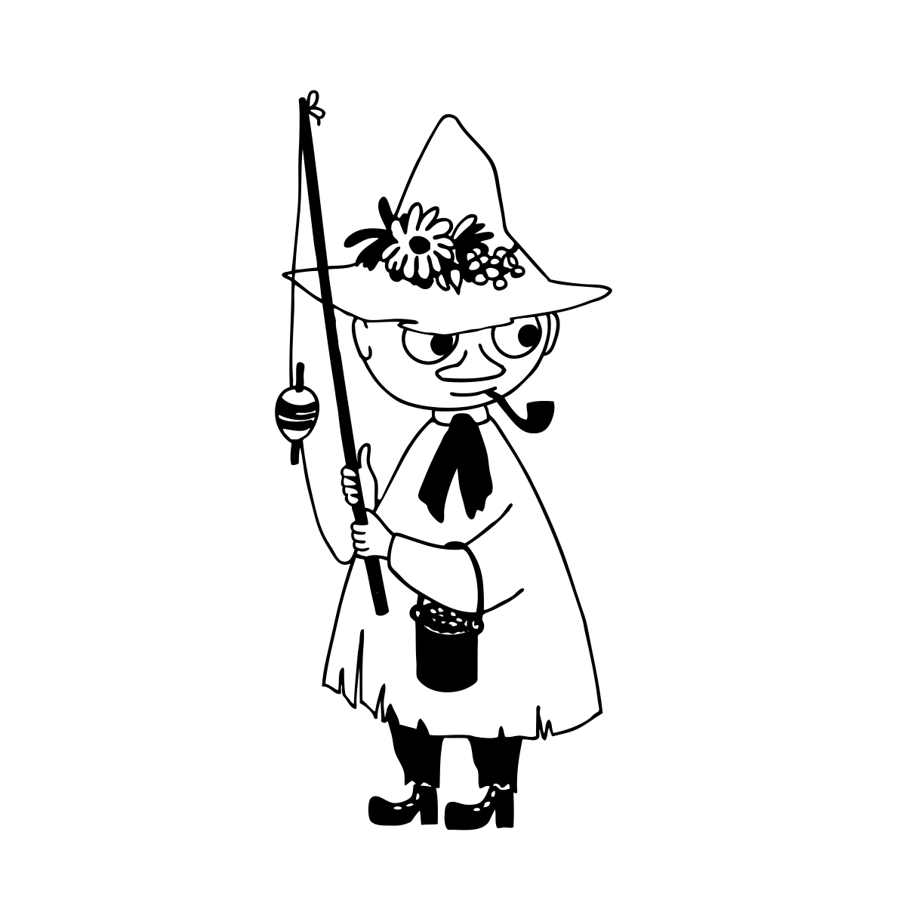

너는 어떤 무민 캐릭터일까?
단 하나뿐인 무민 캐릭터 성격 테스트에 온 걸 환영해!
간단한 10가지 질문에 답하기만 하면 무민 캐릭터 중 너에게 가장 잘 어울리는 캐릭터를 알 수 있어.
즐거운 시간이 될거야!
너는 어떤 사람이야?
무언가를 선택할 때 어떻게 하는 편이야?
둘 중 하나를 가질 수 있다면 어떤 것을 가질거야?
너는 어떻게 해?
어떻게 노는 걸 좋아해?
어떤 옷을 좋아해?
스스로를 소개한다면?
너는 어때?
만약 파티에 간다면?
둘 중 어떤 것을 더 좋아해?

다시 해볼래!
 
